Simulation ▸ Results ▸ Play opens the playback bar below the map. The map then shows the results at the current time step, using the themes marked ▶ (time-varying).
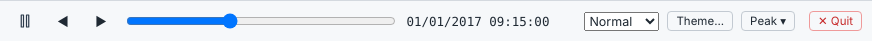
The legend in the lower right of the map lists the active themes. Hover over any object to read its current value. The Properties pane of a selected object shows its Statistic Results from the status report and a small results card.
Themes colour and size nodes, links and subcatchments by any attribute, computed value, simulation result or expression. Open the Layer Theme Editor with Operation ▸ Display ▸ Theme, from the playback bar, or by right-clicking a layer.
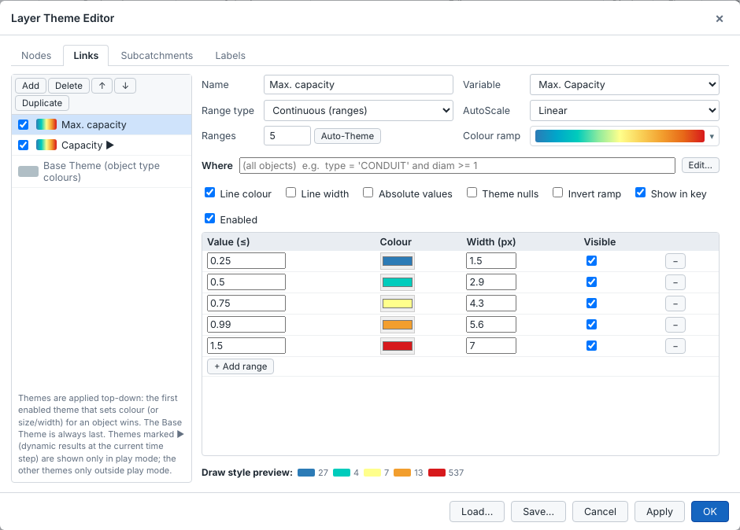
type = 'CONDUIT' and diam >= 1.| Setting | Options |
|---|---|
| Variable | Any model field (diameter, invert, roughness…), computed value (slope, rim elevation, full flow…), result (max depth, max capacity, flooding, current depth…), or Custom expression… written in the expression language. |
| Range type | Continuous (ranges) for numbers; Individual (values) for categories such as type, shape or tag. |
| AutoScale | Linear, Quantile (equal count), Logarithmic or Exponential. Auto-Theme fills the ranges from the data. |
| Colour ramp | A choice of ramps. Each range can also be edited one by one: value, colour, width or size, visible. |
| Options | Line colour, line width (or symbol size), absolute values, theme nulls, invert ramp, show in key, enabled. |
The Labels tab shows chosen variables as map labels, with the number of decimal places. Save… and Load… exchange themes between models; Load asks whether to add the loaded themes on top or replace the current ones.
Right-click a numeric column of an attribute table and choose Color Map by This Field to create a theme in one step.
Flags are ready-made warning rules that colour the problem objects of a simulation, for example nodes that flood, pipes over capacity or sewers that silt up. Each rule has up to three levels: Warning, High and Critical. You can adjust the thresholds directly in the rule text, and edit the rules themselves.
Open the panel with Operation ▸ Flag ▸ Flag.
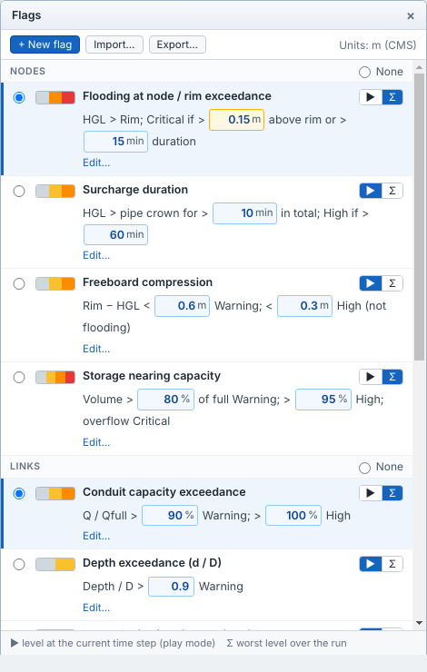
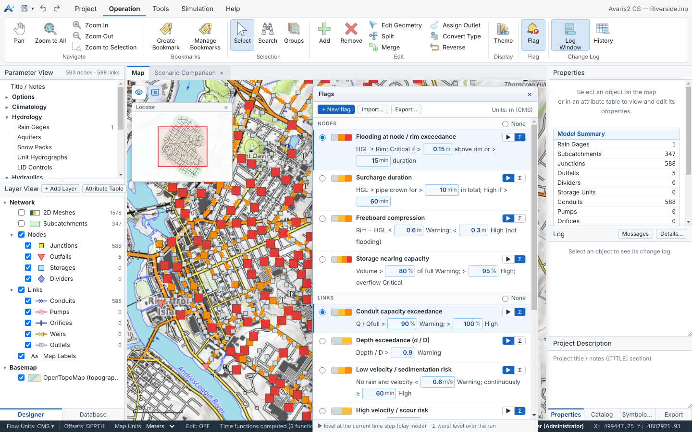
The colour dialog shows a short description of the flag and, for each level, its colour and the condition that sets it. To change the conditions, use Edit…. Tick No fill for Normal to keep the usual symbol for objects that are not flagged.
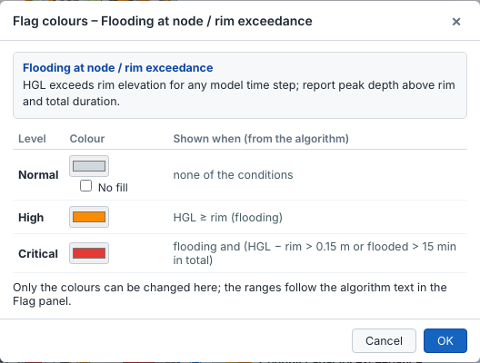
{name}, without its unit.$name, and click a field or function on the right to insert it. Levels are checked from Critical down, and the first true condition sets the level.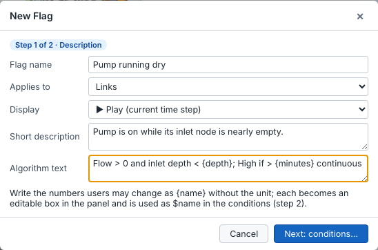
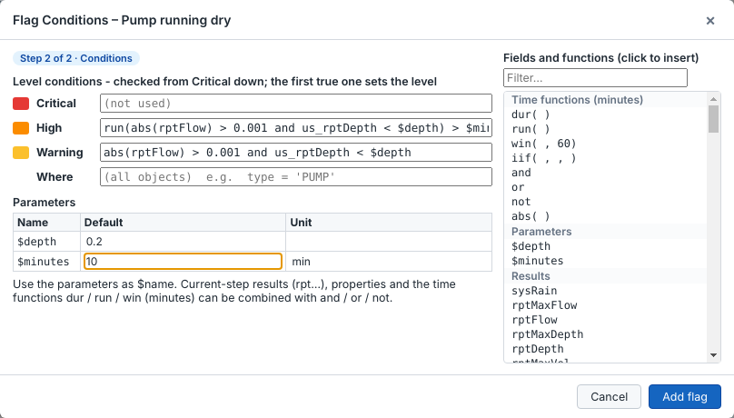
run(…) and the parameters $depth and $minutes.Your own flags can be edited or deleted with the links under them. Export… and Import… share flags between models and colleagues. All flag settings are saved with the model in Model.flags.json.
Every built-in flag can be changed, not only its thresholds. Click Edit… under the flag to change its name, description, rule text, the condition of each level, the Where condition and the default values of its parameters (US and SI).
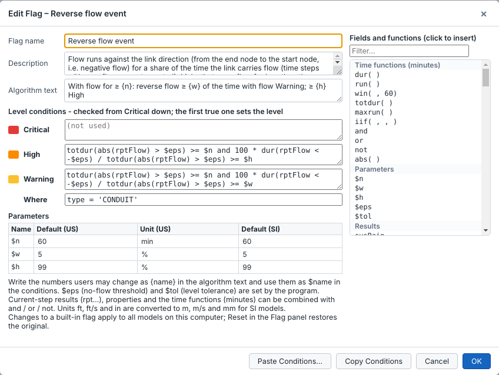
$name is a parameter of the rule text; $eps (smallest flow counted as flow) and $tol (level tolerance) are set by Avaris2 CS for the model units.High: totdur(abs(rptFlow) > $eps) >= $n and 100 * dur(rptFlow < -$eps) / totdur(abs(rptFlow) > $eps) >= $h
Warning: totdur(abs(rptFlow) > $eps) >= $n and 100 * dur(rptFlow < -$eps) / totdur(abs(rptFlow) > $eps) >= $w
Where: type = 'CONDUIT'Default thresholds are shown as US / SI values.
| Flag | Layer | Rule | Default thresholds |
|---|---|---|---|
| Flooding at node / rim exceedance | Nodes (not outfalls) | HGL > rim: High; Critical if more than above over the rim, or flooded longer than dur in total | above 0.5 ft / 0.15 m; dur 15 min |
| Surcharge duration | Nodes (not outfalls) | HGL above the crown of the highest connected pipe for more than w in total: Warning; more than h: High | 10 min; 60 min |
| Freeboard compression | Junctions | Rim − HGL below w: Warning; below h: High (not flooding) | 2 ft / 0.6 m; 1 ft / 0.3 m |
| Storage nearing capacity | Storage units | Volume over w of full: Warning; over h: High; overflowing: Critical | 80 %; 95 % |
| Conduit capacity exceedance | Conduits | Q / Qfull over w: Warning; over h: High | 90 %; 100 % |
| Depth exceedance (d / D) | Conduits | Depth / diameter over w: Warning | 0.9 |
| Low velocity / sedimentation risk | Conduits | No rain, flowing, velocity below v: Warning; continuously for t: High | 2 ft/s / 0.6 m/s; 60 min |
| High velocity / scour risk | Conduits | Velocity over v: Warning | 10 ft/s / 3 m/s |
| Reverse flow event | Conduits | Only conduits that carry flow for at least n: flow against the link direction (end node to start node) for at least w of the time with flow: Warning; at least h: High. Time steps without flow are not counted. | 60 min; 5 %; 99 % |
| Dry-weather high depth | Conduits | No rain and d / D over r for at least t: Warning | 0.5; 30 min |
| Tailwater sensitivity | Links into outfalls | Outfall level within d of the pipe crown: Warning; above the crown: High | 1 ft / 0.3 m |
| Slow-draining subcatchment | Subcatchments | Runoff continues more than t after the rain stops: Warning | 120 min |
Durations are counted in reporting steps. With a 15-minute reporting step, a condition that is true at one step counts as 15 minutes. Use a shorter reporting step for more precise durations.
Simulation ▸ Results ▸ Report opens the engine status report (.rpt) as a document with navigation, instead of plain text.
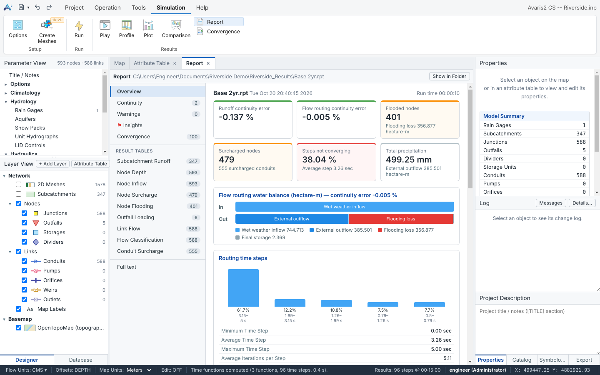
| Page | Contents |
|---|---|
| Overview | KPI cards: runoff and flow-routing continuity errors, flooded nodes and flooding loss, surcharged nodes and conduits, steps not converging, total precipitation. Also a flow-routing water balance bar, the distribution of routing time steps, the main options, and the top-10 lists. |
| Continuity | The runoff, groundwater and flow-routing continuity tables. |
| Warnings | Engine warnings and errors. |
| Insights | For every flag that uses durations (dur, run, win): the number of flagged objects, the worst level of each object, the time of the worst level and the total time, using the thresholds currently set in the Flag panel. Each table has Export CSV. |
| Convergence | The most frequently non-converging nodes and the time step summary. |
| Result tables | Subcatchment Runoff, Node Depth, Node Inflow, Node Surcharge, Node Flooding, Outfall Loading, Link Flow, Flow Classification, Conduit Surcharge. You can sort by any column, filter, export to CSV, and click an ID to locate the object. |
| Full text | The complete report as text. |
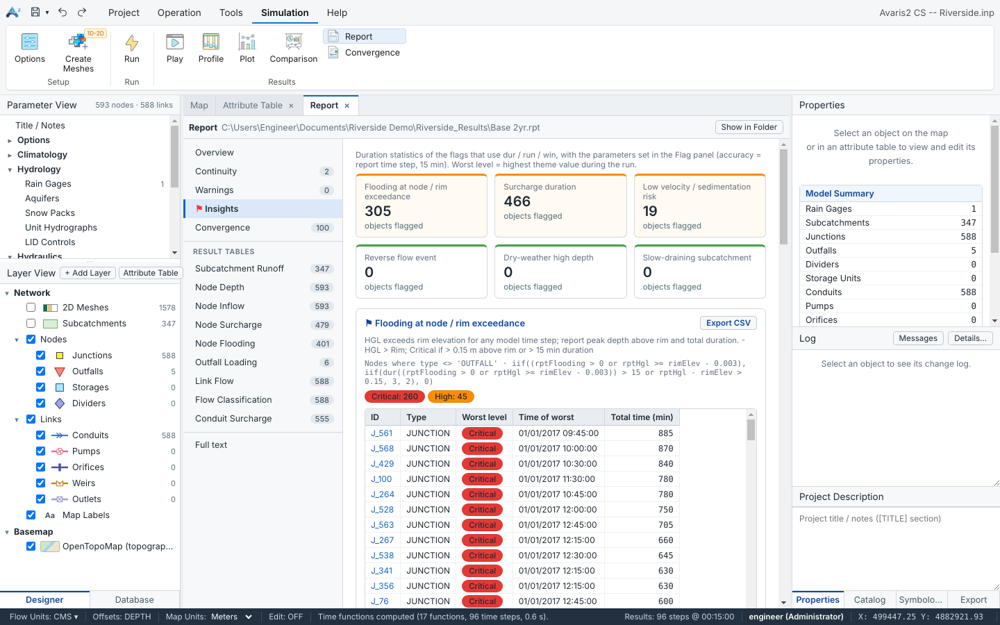
Select two nodes, or a chain of links, and click Simulation ▸ Results ▸ Profile. The profile follows the flow path between them and shows:
A table of node and link values sits above the graph.
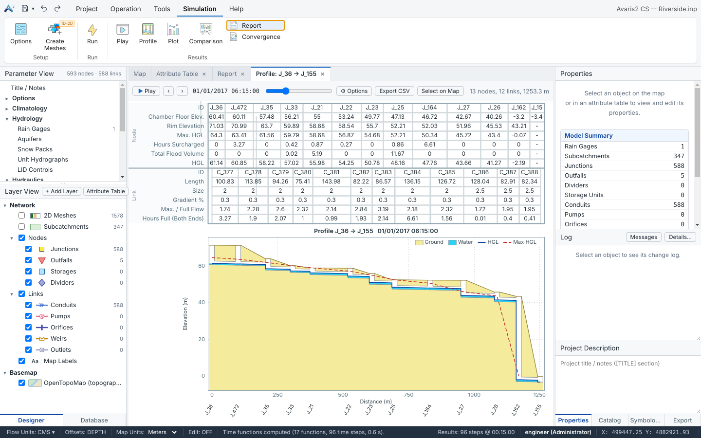
Select one or more objects and click Simulation ▸ Results ▸ Plot. Choose the object type, the variable and the time axis (elapsed hours or date and time). You can tick Overlay comparison run to draw a second run as dashed lines.
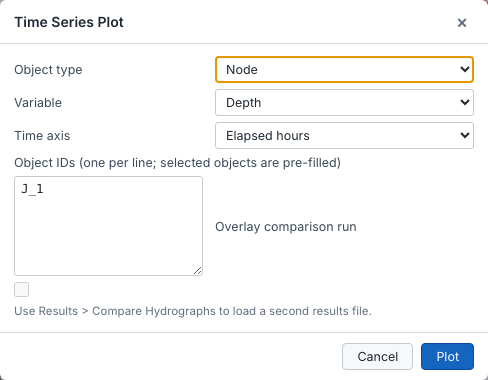
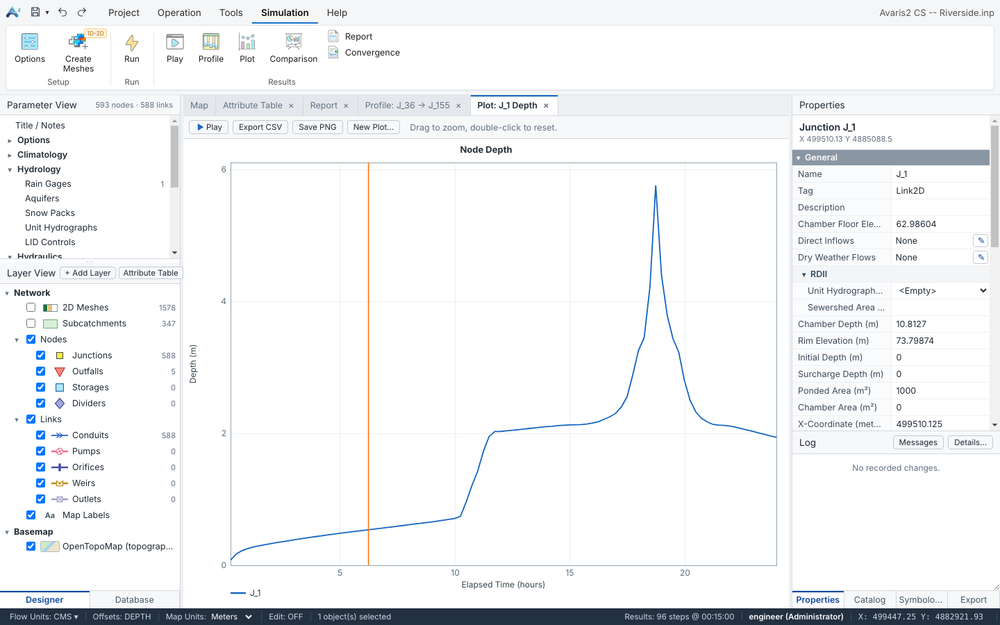
Hover over the graph to read values. Drag to zoom in, and double-click to reset the zoom. Export CSV and Save PNG export the graph. The rainfall of a rain gage is drawn as an inverted bar chart; you can change this in Default Settings.
Simulation ▸ Results ▸ Comparison compares two runs: two scenarios, or two runs of the same model. Load the second run from the Database (Add to Comparison), or use Run Selected & Compare in the Scenarios panel.
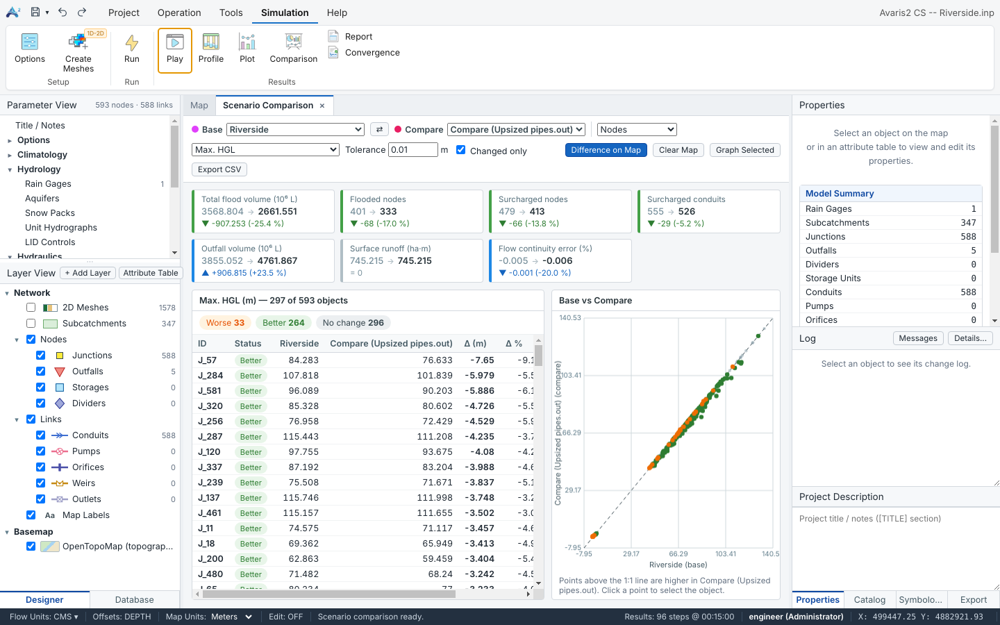